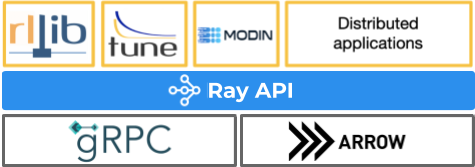
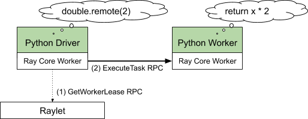
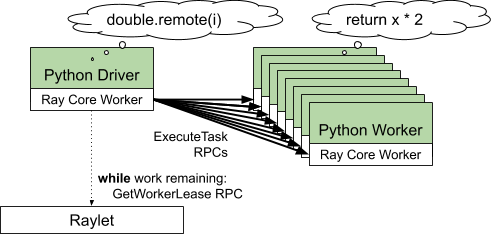
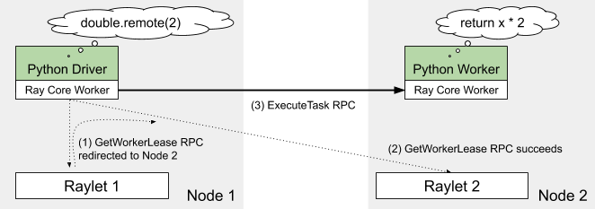
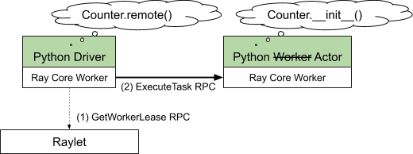
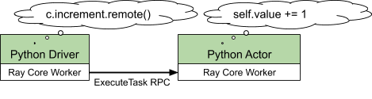
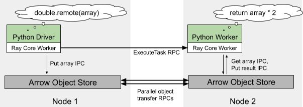
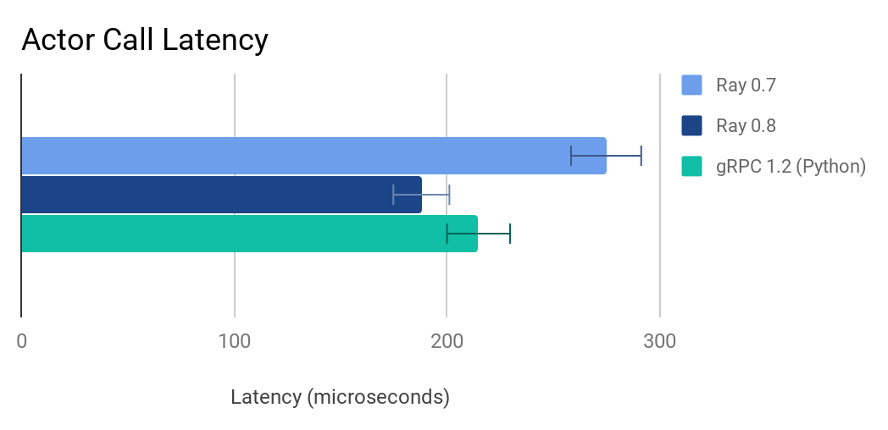
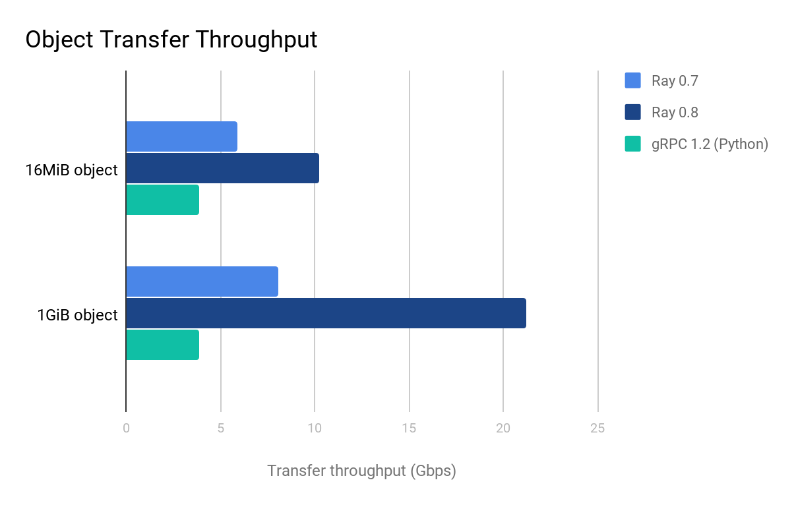

原文：How Ray Uses gRPC (and Arrow) to Outperform gRPC
对理解 Ray 的底层逻辑有帮助。文中描述的Ray版本为0.8。
Overview of Ray
Ray 的计算任务分为两类，无状态计算任务 Task，有状态计算任务 Actor。
- Tasks (remote functions): these let you run a function remotely in a cluster. Tasks are for stateless computation.
- Actors (remote classes): these are instances of Python classes running remotely in worker processes in a cluster. Actors are for stateful computation, where evolving state needs to be managed.
原文讲的是Ray核心逻辑，如何使用gRPC和Arrow的。

How Ray calls translate into gRPC operations
从几个例子可以了解到：
- Ray 如何调度 task（python function）/actor（python class）。
- Ray 如何对调度工作进行优化的。
Basic Ray Task Call
@ray.remote
def double(x):
return x * 2
fut1 = double.remote(2)
assert ray.get(fut1) == 4
工作进程调用 double.remote，触发如下两次 gRPC请求：
第一次 gRPC 请求：GetWorkerLease RPC
- Raylet：Ray 调度后台进程，每个节点一个。
- 向 Raylet 申请需要运行 double 的资源，ask for a lease on a worker to execute double(2)。
- Raylet 的调度器检查 task（也就是double方法）需要的资源（@ray.remote里可以指定需要的资源）或是依赖，根据上述信息，找到一个合适的worker。
- 这次 gPRC 请求申请资源成功，相当于在 worker 上加了一把排他锁。其他任务无法使用worker。While it holds the lease, no other worker process can schedule tasks on the leased worker.
第二次 gRPC 请求：ExecuteTask RPC
- 向申请到的worker发送任务，并获取结果。
- 因为参数和返回结果足够小，都是包含在gPRC请求里。
- 传输大数据，后面会讲。
- 上述gRPC请求中间出现意外，都会进行重试，直到重试上限。

- 上图是在单机上运行的Ray逻辑结构。Ray 使用 gPRC 作为统一的通信层。
- 绿框中的是Python代码。
- 白框中的是C++代码，Ray common runtime。
- Python Driver进程包括Python Driver + Ray Core Worker，Python Worker进程包括Python Worker + Ray Core Worker。可以理解Python是胶水层。
Caching Scheduling Decisions
futures = [double.remote(i) for i in range(1000)]
ray.get(futures) # [0, 2, 4, 6, …]
以上代码触发了1000次double.remote，因为是同一块代码，它们使用相同的worker配置，这就是优化点所在。
上文得知，执行任务两步走，一是申请资源，二是实际执行任务。因为task要求的资源配置相同，可以缓存并复用资源，caches scheduling decisions，大量减少 GetWorkerLease RPC的请求次数。有限次（任务的并行数）的 GetWorkerLease RPC 均摊到大量的Task上，损耗可忽略不计，可以理解为执行多少个Task，只需要执行同等数量的 ExecuteTask RPC。

Scaling to Multiple Nodes
double.remote(2)的例子扩展到多节点的场景，假设本地机器没有空闲的worker了。
- driver程序向raylet1，也就是本地raylet申请资源，GetWorkerLease RPC
- raylet1知道本节点没有资源了，但是知道raylet2（其他节点的raylet）有worker资源，将请求转发到raylet2
- 资源就这样申请成功。暂时还没解释raylet1怎么知道raylet2有资源的。
- driver程序向node2上的worker发起 ExecuteTask RPC，执行任务。
- 多节点上caches scheduling decisions的策略同样有效。

Creating and Using Actors
Actor 是有状态的 Task。调度逻辑大体相同。
@ray.remote
class Counter:
def __init__(self):
self.value = 0
def increment(self):
self.value += 1
return self.value
c = Counter.remote()
assert ray.get(c.increment.remote()) == 1
- 调用 Counter.remote()，触发资源申请，GetWorkerLease RPC，申请Worker
- 对于Actor，构造函数
__init__作为Task发送到 Worker 去。触发任务执行，ExecuteTask RPC。 - Actor是有状态的，Actor 实例与 申请的Worker 会绑定，直到Actor实例消亡。

- 因为有了绑定关系，Actor实例方法的执行，直接与Worker直接通信。ExecuteTask RPC。
- 不需要再次任务调度。

Sending and Sharing Large Objects with Arrow
大对象（一般指的是超过100KB）通过gRPC传输不够高效。Ray 使用 shared memory object store provided by Apache Arrow 来存储大对象。
- 相同节点上，两个Task之间大对象的传输，实际使用的是共享内存。减少了使用gRPC带来的大对象copy。
- 针对不同节点上的两个Task之间的大对象传输，就会涉及到两块共享内存的数据传输了，这块还是用的gRPC。
- driver程序执行double.remote(array)，因为array太大，首先会存储到共享内存，然后触发ExecuteTask RPC。
- worker上，array需要从本机的共享内存取，而共享内存按需从其他节点共享内存取。
- worker 的工作结果，因为也比较大，存储到共享内存。
- driver通过ray.get获取结果，结果才从node2的共享内存同步到node1的共享内存。懒加载。

Ray 0.8 Performance
通过上述优化，0.8版本比老版本在请求延迟和对象传输吞吐量方面有了提高。但不是文中吸引我的地方。
请求延迟，C++ gRPC 比 Python gRPC有更低的响应时间。

对象传输吞吐量，因为采用了多条 C++ gRPC 轮询线程，对象传输快了很多。使用Python gRPC就差很多。

总结起来，用C++榨干机器性能，Python有太多overhead。Ray 公司也计划着C++/Rust的语言接口。也是为了性能考虑吧。
At Anyscale, we’re working on a number of enhancements for Ray 1.0, including:
- Support for tasks/actors written in C++ and Rust (in addition to Python and Java today).
- Distributed reference counting for shared memory objects.
- Accelerated point-to-point GPU transfers.
Last modified on 2020-08-07